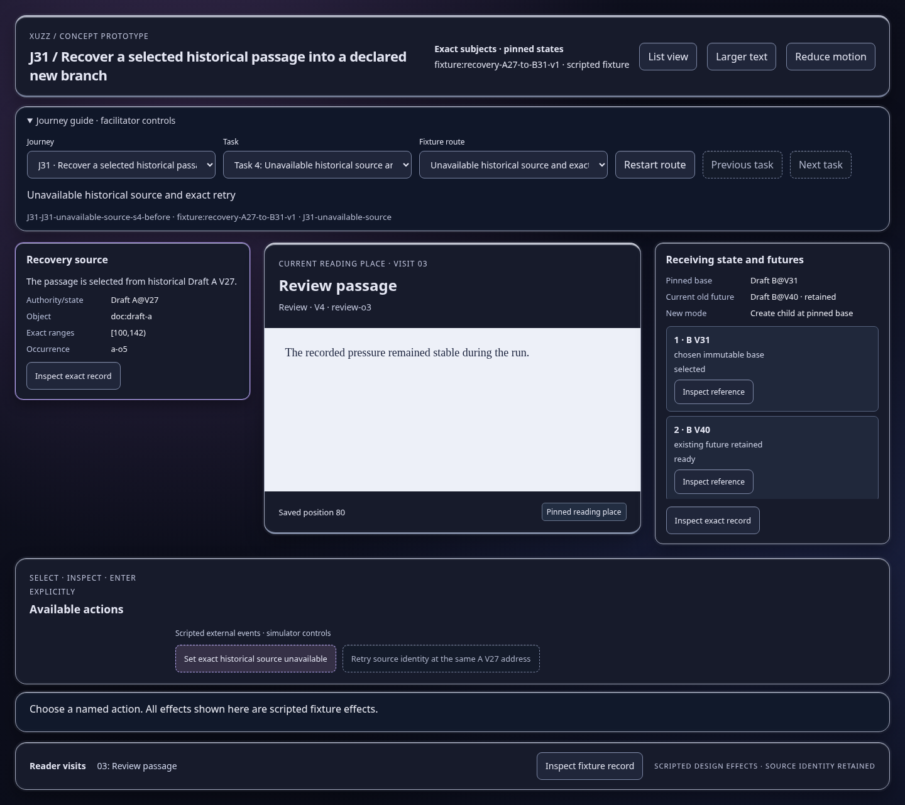
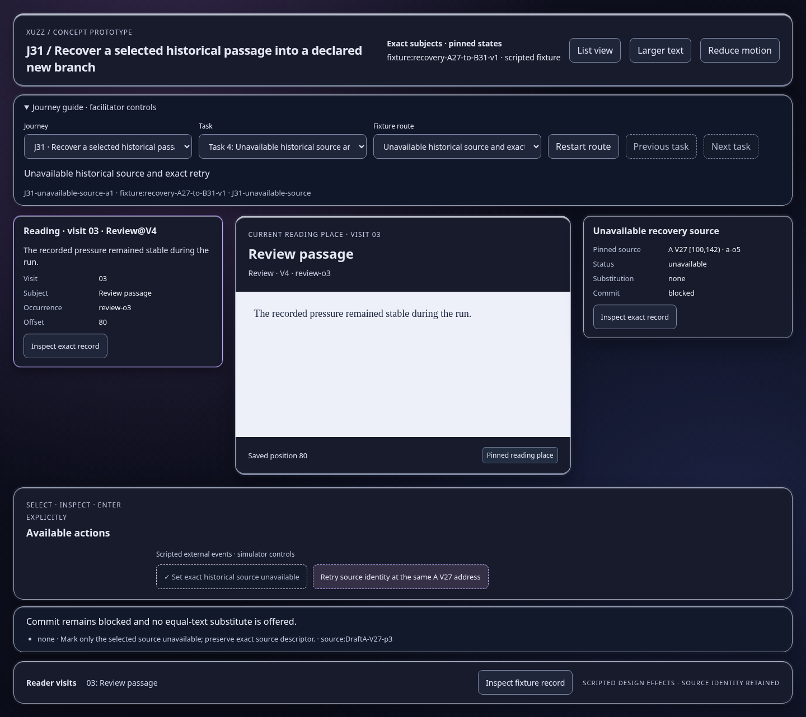
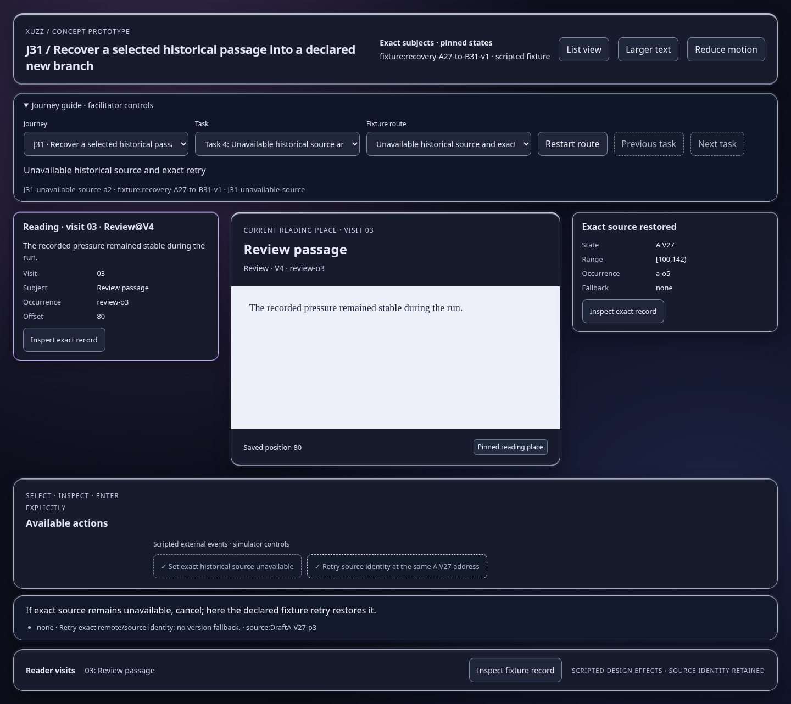

Scripted concept states; inspect the effect and identity trace. Images show actual prototype rendering.

Commit remains blocked and no equal-text substitute is offered.
Open this represented state
If exact source remains unavailable, cancel; here the declared fixture retry restores it.
Open this represented state